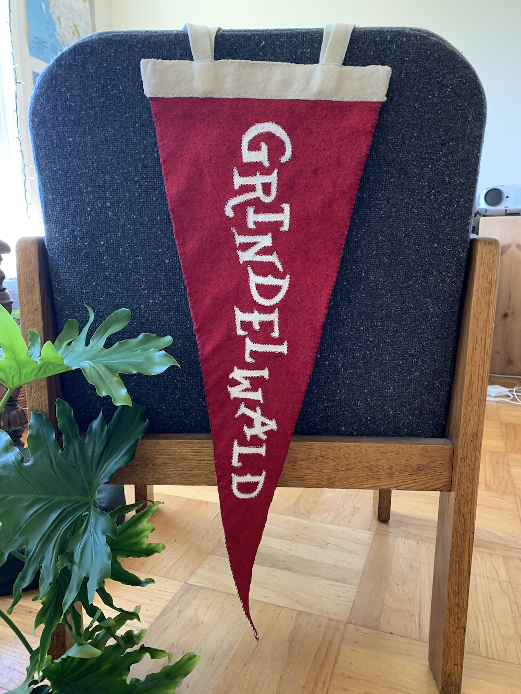
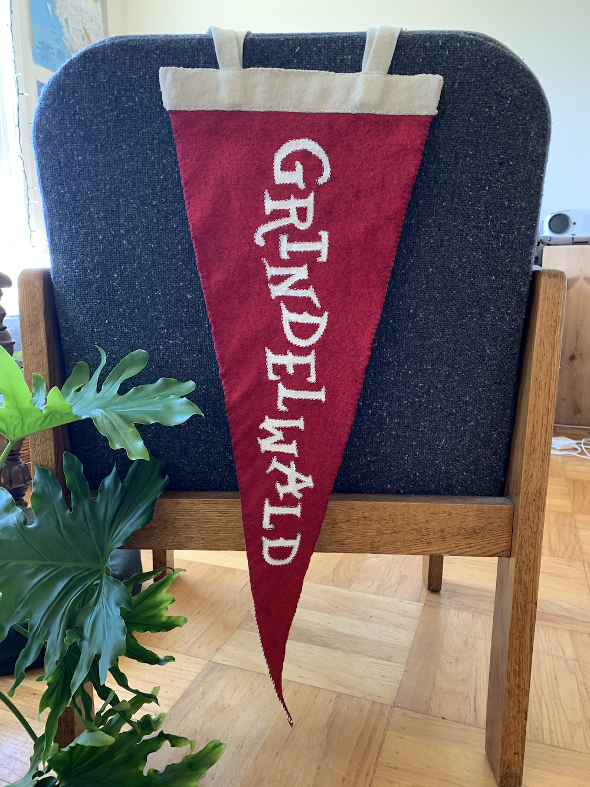
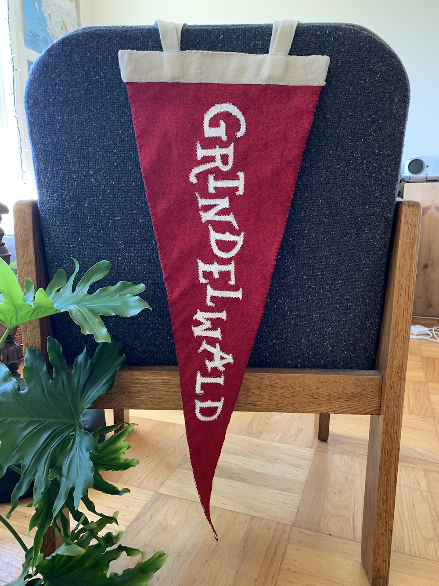

There are few things more classic than a felt pennant. Traditionally associated with sports & travel, it's common nowadays to have pennants bearing all sorts of messages.
I'd been collecting pennants for many years before I wanted to make my own. My favorite is a 1940's New York Yankees pennant I found under a pile of records in a thrift shop. The pennants I make feature places that are either important to myself or to someone I know (as they make great gifts).
